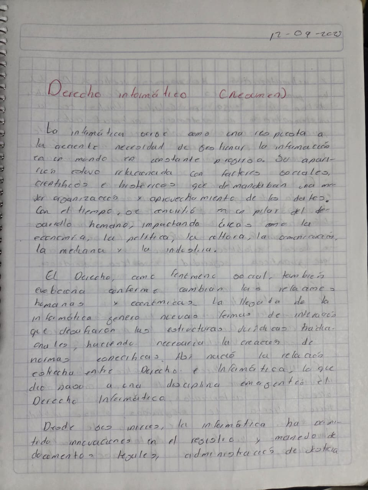
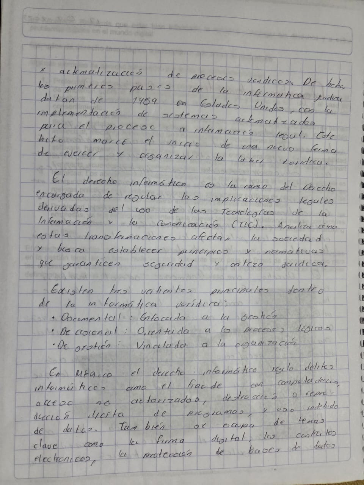
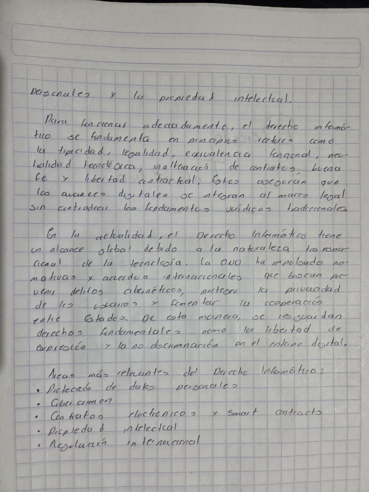
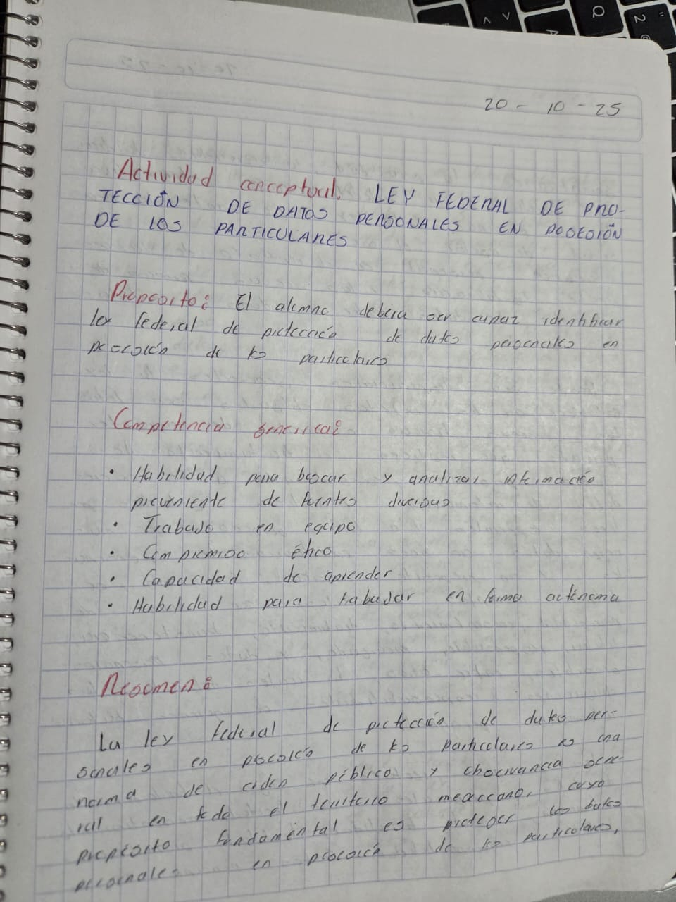
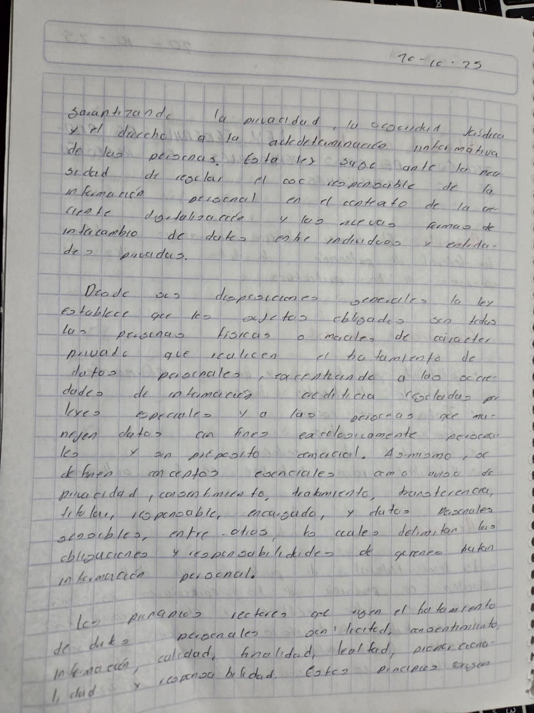
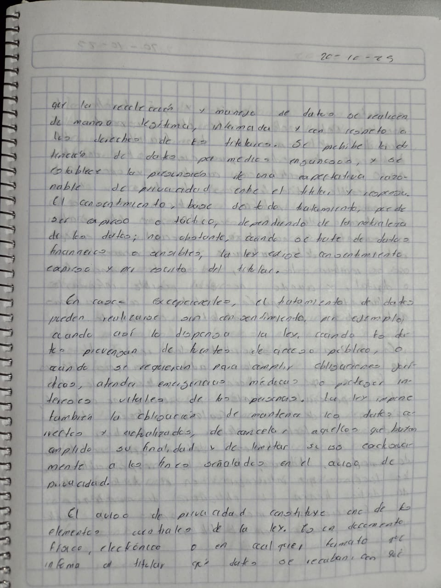
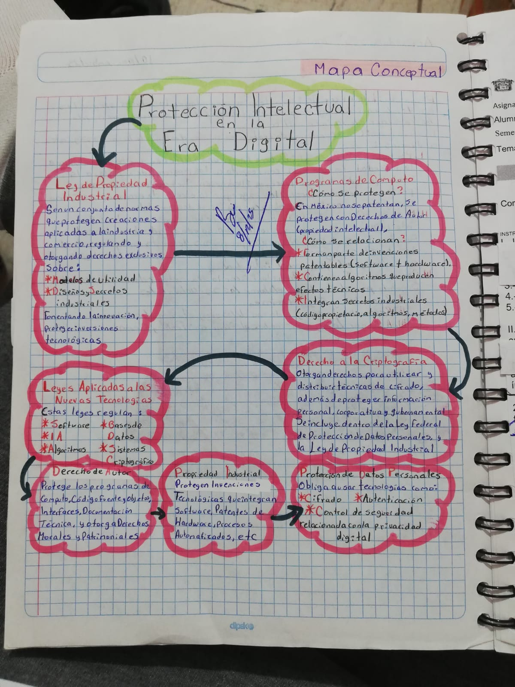
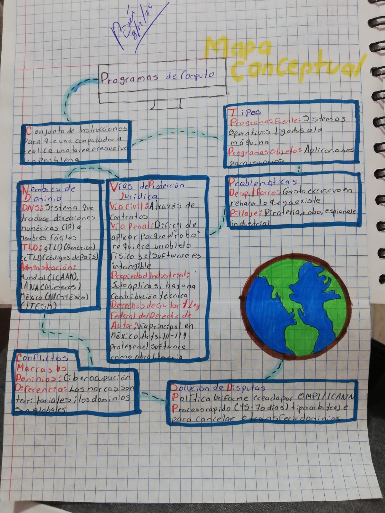
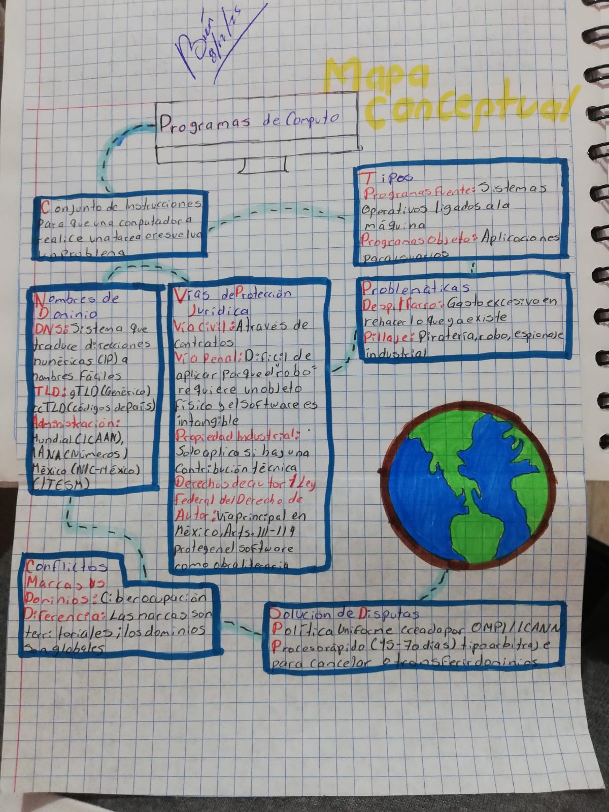

RESUMENES
En este apartado podras encontrar resumenes importantes acerca de la legislación informática
Derecho informático
  Ley federal de protección de datos personales
  Protección intelectual en la era digital
 
